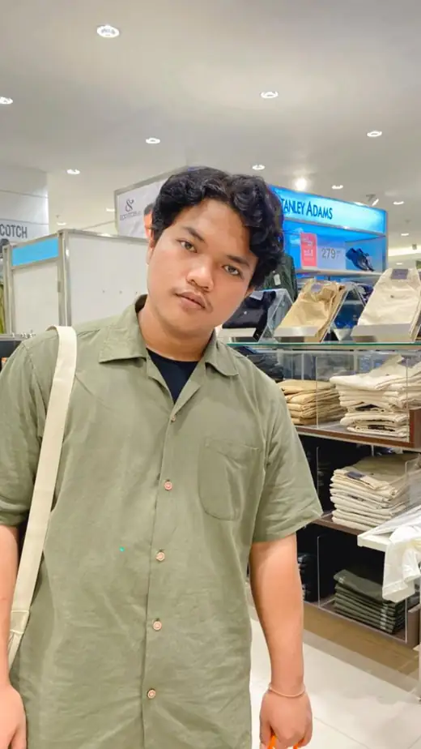
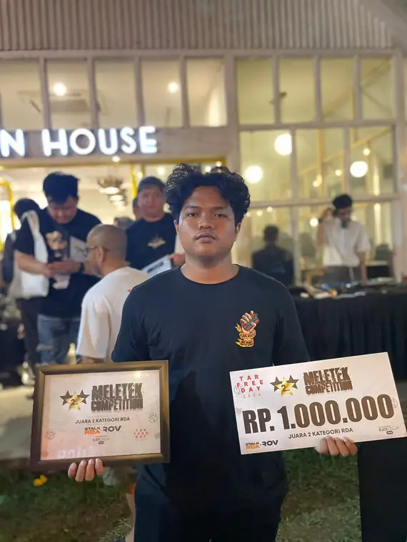

RUANG I01 — 03
Corporate
Legal.
Meninjau dan menyusun perjanjian, mengelola dokumen legal, serta membantu memastikan kebutuhan administrasi hukum perusahaan tertata dengan baik.
DOKUMEN · KONTRAK · KEPATUHANSEBUAH RUANG UNTUK MENGENAL FARIDH FIKRI

Saya Faridh. Latar belakang saya ada di Ilmu Hukum, tetapi perjalanan kerja membawa saya ke beberapa ruang yang saling berhubungan: Corporate Legal, HRGA, administrasi, dan relasi bisnis.
Pengalaman itu mengajarkan satu hal sederhana: proses yang baik perlu ketelitian, tetapi juga perlu memahami orang-orang yang menjalaninya. Dua hal itu yang terus saya bawa dalam pekerjaan.
Setiap bidang punya tantangannya sendiri. Tapi semuanya bertemu di kebutuhan yang sama: proses jelas, komunikasi tepat, dan pekerjaan yang bisa dipertanggungjawabkan.
Meninjau dan menyusun perjanjian, mengelola dokumen legal, serta membantu memastikan kebutuhan administrasi hukum perusahaan tertata dengan baik.
DOKUMEN · KONTRAK · KEPATUHANDari administrasi karyawan, absensi, dan onboarding hingga koordinasi kebutuhan General Affairs yang menunjang aktivitas harian perusahaan.
KARYAWAN · INVENTARIS · KOORDINASIPengalaman sales dan komunikasi bisnis membantu saya memahami kebutuhan pelanggan, menjaga relasi, dan menyesuaikan pendekatan dengan situasi.
SALES · RELASI · LAYANANKetelitian memberi arah.
Rasa ingin tahuBeberapa peran, lingkungan, dan tanggung jawab berbeda. Klik satu pengalaman untuk melihat apa yang saya kerjakan di sana.
SEPTEMBER — DESEMBER 2025
PT Starlead Technology Indonesia
Menangani kebutuhan Corporate Legal, administrasi kontrak PKWT, urusan HR, serta koordinasi General Affairs. Di sini saya belajar melihat hubungan antara ketepatan dokumen dan kelancaran aktivitas perusahaan.
LEGAL / PEOPLE / OPERATIONSPENGALAMAN LAINNYA TETAP BISA DIBACA DARI CV LENGKAP UNDUH CV ↗
DARI RUANG KULIAH KE DUNIA KERJA
Sarjana Ilmu Hukum
Sertifikasi dan informasi akademik mengikuti dokumen yang tersedia pada portofolio sebelumnya.

LEBIH DARI PEKERJAAN DI MEJA
Pengalaman bertemu pelanggan, berkomunikasi dengan banyak pihak, dan menyesuaikan diri di lingkungan berbeda memberi perspektif yang tidak selalu saya temukan di ruang kelas.
Itulah alasan saya menikmati pekerjaan yang menggabungkan ketelitian dan hubungan antarmanusia.
PUNYA HAL YANG INGIN DIDISKUSIKAN?
Saya terbuka untuk percakapan tentang kesempatan profesional, kerja sama, atau sekadar saling bertukar pandangan.
Kirim email ke Faridh